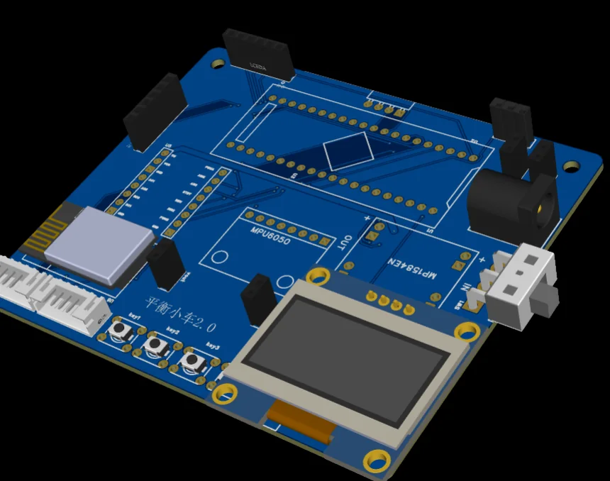
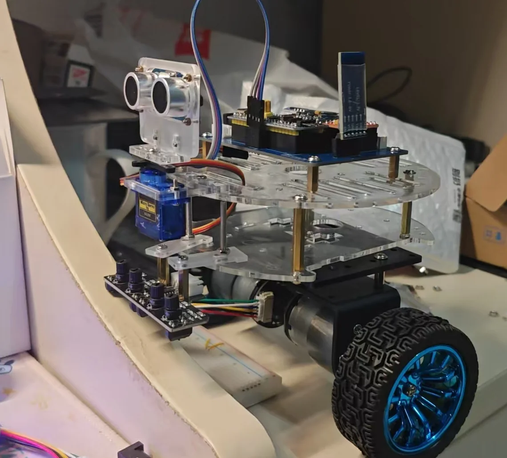

两轮循迹平衡小车
PID 自平衡 + 循迹，姿态解算下沉到传感器，两件事在同一台车上跑通。


问题
平衡车是最经典的 PID 练手项目，但大部分教程只做到「能站住」，我想让它同时能循迹。
方案
- STM32F103 主控，纵向速度环 + 横向平衡环双 PID。
- 移植 DMP 库配合 MPU6050，把姿态解算放在传感器侧，降低主控负担。
- 自设计集成电源与电机驱动的 PCB，减少杜邦线带来的接触问题。
结果
- 完成焊接、组装与整机调试，能稳定站立并跟随循迹线。
- 姿态解算下沉后，主控有更多余量留给控制环路。
最难的一步
PID 参数最难调。直立环和速度环互相拉扯，改一个另一个就变差，只能一遍遍试，把两件事磨到能同时跑。
技术栈
源码
balance-car 固件 · Keil 工程 →
STM32F103C8T6 · 双环 PID · MPU6050 DMP 姿态解算 · 五路红外循迹 · 含工程文件与引脚说明